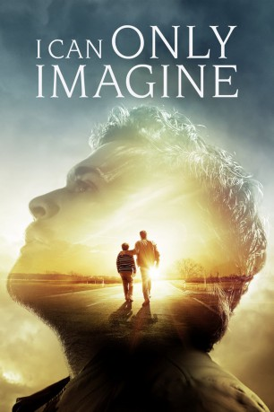
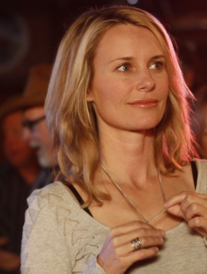

#10884 I Can Only Imagine: Der Song meines Lebens
Alternativ: I Can Only Imagine (Englischer Titel)
 
 IMDB-Wertung: 7.4 / 10
IMDB-Wertung: 7.4 / 10  Metascore: 30
Metascore: 30 
Bart Millard (Brody Rose) führt mit seinen Eltern ein einfache Leben auf dem Land und hat es wirklich nicht leicht: Sein Vater Arthur (Dennis Quaid) neigt zu Wutanfällen und Gewalttätigkeit und als seine Mutter es eines Tages nicht mehr aushält und die Familie verlässt, bleibt er alleine bei seinem seinem Vater zurück. Hinzu kommt, dass Bart nach einem schweren Unfall beim Football den Sport nicht länger ausüben kann und sich deswegen auch ein neues Wahlfach an der Schule suchen muss. Schließlich landet er beim Chorunterricht, wo seine Lehrerin sofort Barts großes Talent erkennt und ihn ermutigt, sich dem Singen zu widmen. Nach seinem Schulabschluss zieht Bart (jetzt: J. Michael Finley) mit seiner Band MercyMe durch Amerika und feiert erste Erfolge, doch ein Plattenvertrag wird ihm vorerst verweigert. Erst als er sich seiner Vergangenheit stellt und ein Lied mit dem Titel „I Can Only Imagine“ komponiert, gelingt ihm der Durchbruch...
Jahr: 2018
Dauer: 110 Minuten
FSK: 6
Land: USA Studio: LionsgateTonspuren: DTS - ,
Untertitel: Deutsch,
Auflösung: 1080p (1920x856) Größe: 6410 MB
Genre: Drama, Musik, Familie, Biographie
Regisseur: Andrew Erwin, Jon Erwin
Drehbuch: Bart Millard, Jon Erwin, Brent McCorkle, Alex Cramer, Jon Erwin
Soundtrack: Brent McCorkle
Darsteller:
- J. Michael Finley als Bart
 Madeline Carroll als Shannon
Madeline Carroll als Shannon Dennis Quaid als Arthur
Dennis Quaid als Arthur Trace Adkins als Brickell
Trace Adkins als Brickell Cloris Leachman als Memaw
Cloris Leachman als Memaw Jason Burkey als Mike
Jason Burkey als Mike- Mark Furze als Nathan
- Randy McDowell als Jim
- Cole Marcus als Robbie
- Alexander Dominguez als Kent
 Brody Rose als Young Bart
Brody Rose als Young Bart- Taegen Burns als Young Shannon
- J.R. Cacia als Rusty
-  Tanya Clarke als Adele
- Nicole DuPort als Amy Grant
- Jake B. Miller als Michael W. Smith
- Priscilla C. Shirer als Mrs. Fincher
 Gianna Simone als Dr. Avondale
Gianna Simone als Dr. Avondale- Josh Walsh als Ross
 Mark Robert Ellis als Coach
Mark Robert Ellis als Coach- Samuel Sadovnik als Young Kent
- Kerry McCormick als Nurse
- David Norona als Bill Layton
- Kevin Downes als Singleton
 Rhoda Griffis als Jen-Amy's Manager
Rhoda Griffis als Jen-Amy's Manager- Bill 'Bubba' Bussey Jr. als Radio DJ #2
- Delilah als Delilah
- Londyn Anderson als Nashville Concert Audience Member (uncredited)
- Gina D. Brewer als Concert Goer (uncredited)
- Joy Brewer als Concert Goer (uncredited)
- O'Shay Brooks als Mover (uncredited)
- Patrick Conlon als Violinist (uncredited)
- Charles Day als Concert Patron (uncredited)
- Amy Grant als Amy Grant (uncredited)
- Brandon E. Jackson als Stephen Millard (uncredited)
- Desiree' Jones als Concert Patron (uncredited)
- Alyssa Laronde als Concert Goer (uncredited)
- Lea McCormick als Concert Goer (uncredited)
- Kristen Melling als Nurse (uncredited)
- Sara Moore als Concert Guest (uncredited)
- Jonnie Parnell als Concert Fan Goer (uncredited)
- Blade Pfeifer als Audience Member (uncredited)
- Ginifer Ree als Featured Patron / Concert Guest (uncredited)
- Kim Robertson als Funeral Attendee (uncredited)
- Nick Swezey als Church Patron (uncredited)
- Danny Tracey als Cab Driver (uncredited)
- Debbi Tucker als Churchgoer (uncredited)
- Christopher 'Gus' Matthews als High School Student
- Erick Ashlock als Jock
- Gary Wallace als Fitz
Datei: X:\2018(G-M)\I Can Only Imagine Der Song meines Lebens (2018, FSK6, 1920x856).mkv seit 03.04.2019
Festplatte: HD 2018(G-Z)-2019(A-Z)
 Es gibt insgesamt 138 Filme in der Gruppe '2018(G-M)'
Es gibt insgesamt 138 Filme in der Gruppe '2018(G-M)'